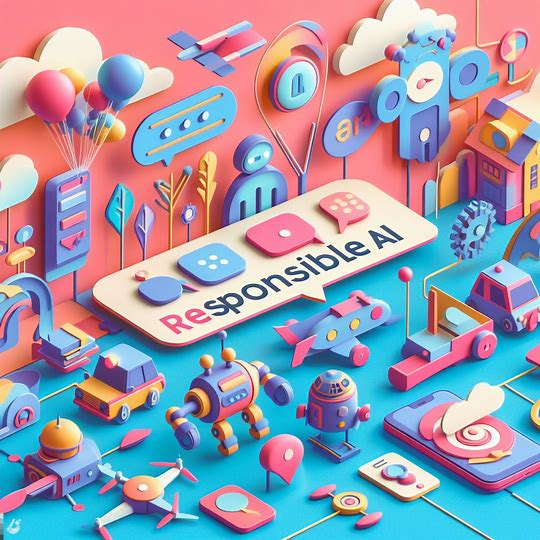
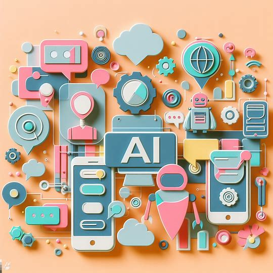
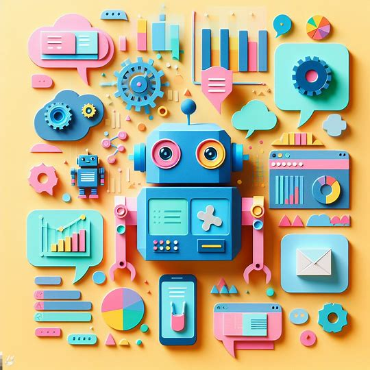

#30DaysOf Responsible AI
From Core Principles To Applied Practices

Source Concept
#01 | Learn RAI Principles
Learn the 6 core principles for guiding AI development and usage: Fairness, Reliability & Safety, Privacy & Security, Inclusiveness, Transparency, and Accountability. Source Concept
#02 | Explore RAI Toolbox
Explore the open-source suite of tools providing model and data exploration and assessment UI libraries to help debug and understand AI systems. Source Concept
#03 | Responsible AI Dashboard
This notebook will walk you through the process of ..... with the Responsible AI Toolkit. Concept
#04 | Error Analysis Dashboard
This notebook will walk you through the process of ..... with the Responsible AI Toolkit. Concept
#05 | Interpretability Dashboard
This notebook will walk you through the process of ..... with the Responsible AI Toolkit. Concept
#06 | Fairness Dashboard
This notebook will walk you through the process of ..... with the Responsible AI Toolkit. Concept
#07 | Explore RAI Mitigations
This notebook will walk you through the process of ..... with the Responsible AI Toolkit.
Tabular Model Debugging
#08 | Census Classification
This notebook will walk you through the process of ..... with the Responsible AI Toolkit. Tabular Model Debugging
#09 | Diabetes Regression Pt. 1
This notebook will walk you through the process of ..... with the Responsible AI Toolkit. Tabular Decision Making
#10 | Diabetes Regression Pt. 2
This notebook will walk you through the process of ..... with the Responsible AI Toolkit. Tabular Model Debugging
#11 | Housing Classification Pt.1
This notebook will walk you through the process of ..... with the Responsible AI Toolkit. Tabular Decision Making
#12 | Housing Classification Pt.2
This notebook will walk you through the process of ..... with the Responsible AI Toolkit. Tabular Model Debugging
#13 | DNN Multiclass
This notebook will walk you through the process of ..... with the Responsible AI Toolkit. Tabular Model Debugging
#14 | Orange Juice Forecasting
This notebook will walk you through the process of ..... with the Responsible AI Toolkit.![[object Object]](img/landing/rai-collection-5.jpeg "#15 | Blbooksgenre Classification")
Text Model Debugging
#15 | Blbooksgenre Classification
This notebook will walk you through the process of ..... with the Responsible AI Toolkit. Text Model Debugging
#16 | Covid Event Classification
This notebook will walk you through the process of ..... with the Responsible AI Toolkit. Text Model Debugging
#17 | DBPedia Text Classification
This notebook will walk you through the process of ..... with the Responsible AI Toolkit. Text Model Debugging
#18 | OpenAI Exploration
This notebook will walk you through the process of ..... with the Responsible AI Toolkit. Text Model Debugging
#19 | Question Answering
This notebook will walk you through the process of ..... with the Responsible AI Toolkit. Vision Model Debugging
#19 | Fridge Image Classification
This notebook will walk you through the process of ..... with the Responsible AI Toolkit. Vision Model Debugging
#20 | Fridge Multi Classification
This notebook will walk you through the process of ..... with the Responsible AI Toolkit. Vision Model Debugging
#21 | Fridge Object Detection
This notebook will walk you through the process of ..... with the Responsible AI Toolkit.
Source Concept Azure ML
#22 | Azure RAI Dashboard - Overiew
Generate a Responsible AI dashboard and scorecard for your ML models on Azure. Learn the core components supported and how to generate a dashboard with a pipeline job, to debug & explore registered models. Source Concept Azure ML
#23 | Azure RAI Dashboard - Tabular
Learn how to train a model and debug it with the Responsible AI Dashboard (using a built-in Azure Sandbox - no subscription needed) for a tabular dataset for Diabetes Patient Readmission Prediction. Source Concept Azure ML
#24 | Azure RAI Dashboard - Text (Preview)
The RAI toolbox for text data is customizable & interoperable. Select components to perform analytical functions for Model Assessment and Debugging, then identify & diagnose issues to improve them. Source Concept Azure ML
#25 | Azure RAI Dashboard - Image (Preview)
The Responsible AI image dashboards are linked to your registered computer vision models in Azure Machine Learning. While some steps are common to all scenarios, some features are unique to image scenarios. Source Concept Azure ML
#26 | Azure RAI Scorecard - PDF
Generate a Responsible AI dashboard and scorecard for your ML models on Azure - via a pipeline job by using core & helper Responsible AI components. Source Azure ML Tabular Model Debugging
#26 | ProgrammersML Regression
This notebook covers the following components: Explanation, Error Analysis, Causal analysis, Counterfactuals Source Azure ML Tabular Model Debugging
#27 | Finance Classification
This notebook covers the following components: Explanation, Error Analysis, Causal analysis, Counterfactuals Source Azure ML Tabular Model Debugging
#28 | Healthcare Classification
This notebook covers the following components: Explanation, Error Analysis, Causal analysis, Counterfactuals Source Azure ML Tabular Model Debugging
#29 | Education Classification
This notebook covers the following components: Explanation, Error Analysis, Causal analysis, Counterfactuals Source Azure ML Tabular Model Debugging
#30 | Kaggle Housing Classification
This notebook covers the following components: Explanation, Error Analysis, Causal analysis, Counterfactuals Source Azure ML Tabular Decision Making
#31 | Kaggle Housing Decision Making
This notebook covers the following components: Causal analysis, Counterfactuals Source Azure ML Tabular Decision Making
#32 | SKLearn Decision Making
This notebook covers the following components: Causal analysis, Counterfactuals Source Azure ML Text Model Debugging
#33 | DBPedia Dataset Classification
This notebook covers the following components: Explanation, Error Analysis Source Azure ML Text Model Debugging
#34 | SQuAD Explanation
This notebook covers the following components: Explanation, Error Analysis Source Azure ML Image Model Debugging
#35 | Fridge Images AutoML Classification
This notebook covers the following components: Explanation, Error Analysis Source Azure ML Image Model Debugging
#36 | MIT Computer Vision Datasets
This notebook covers the following components: Explanation, Error Analysis Source Azure ML Image Model Debugging
#37 | Fridge Image Classification
This notebook covers the following components: Explanation, Error Analysis Source Azure ML Image Model Debugging
#38 | Fridge Image Multilabel Classification
This notebook covers the following components: Explanation, Error Analysis Source Azure ML Text Model Debugging